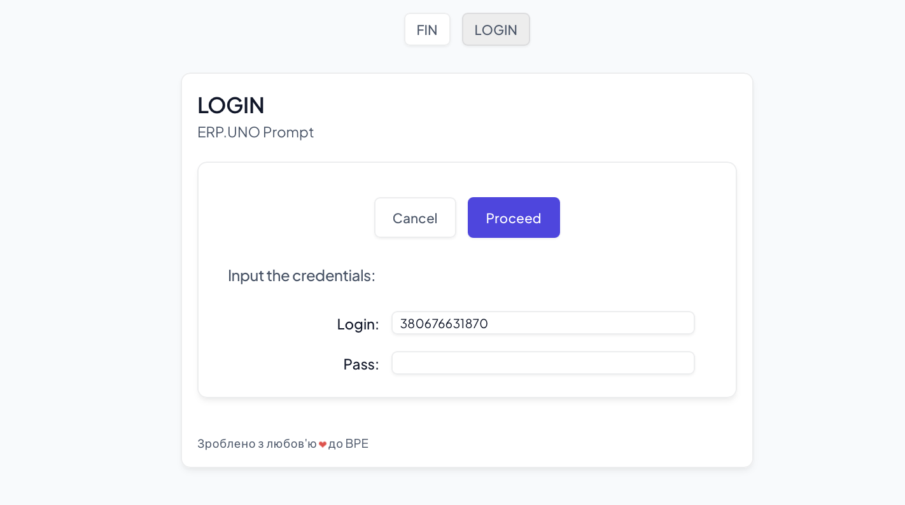
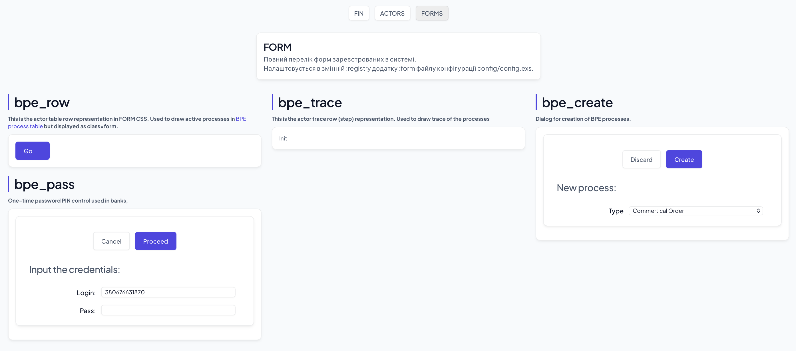

ВСТУП
Бізнес-процеси підприємства BPE визначають інфраструктуру для оркестрування виробничих процесів згідно стандарту BPMN, та систем на основі декларативних правил. БПП зберігає транзакційно усі кроки бізнес-процесів у сучасній системі даних KVS на базі RocksDB.
$ mix deps.get
$ iex -S mix
$ open http://localhost:8041/app/index.html
ПРИЗНАЧЕННЯ
Це навчальний приклад освітнього підготовчого курсу для інтернів, який використовується для здодобуття навичок програмування систем на бібліотеках N2O.DEV.
АУТЕНТИФІКАЦІЯ
Сторінка аутентифікації та авторизаціх разом з системними сесіями є важливою частиною кожної ERP системи. У прикладі наведена PLAIN password HTML форма.

ПРОЦЕСИ
Сторінка переліку BPE процесів ERP системи та форма для їх створення.

ТРАНЗАКЦІЇ
Сторінка історії кроків бізнес-процесу BPE.

ФОРМИ
Сторінка переліку всіх форм ERP системи.
